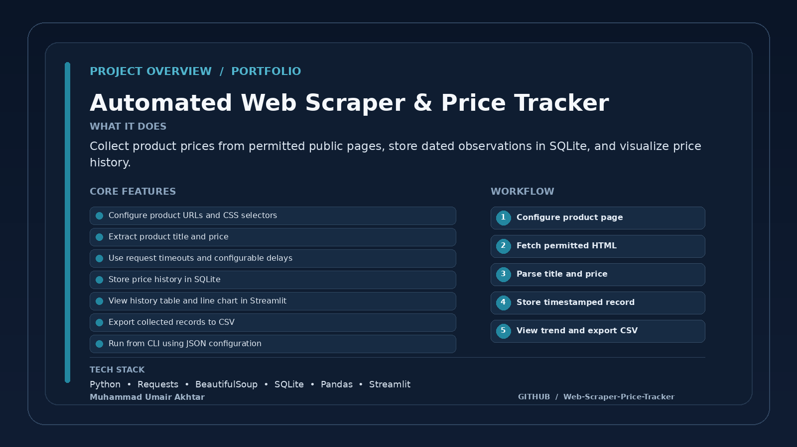

PROJECT 18 / PORTFOLIO
Automated Web Scraper & Price Tracker
Collect product prices from permitted public pages, store dated observations in SQLite, and visualize price history.

Project Overview
Collect product prices from permitted public pages, store dated observations in SQLite, and visualize price history.
Key Features
- Configure product URLs and CSS selectors
- Extract product title and price
- Use request timeouts and configurable delays
- Store price history in SQLite
- View history table and line chart in Streamlit
- Export collected records to CSV
- Run from CLI using JSON configuration
Project Workflow
Configure product page → Fetch permitted HTML → Parse title and price → Store timestamped record → View trend and export CSV
Technologies Used
Scope & Notes
Check website terms and robots.txt. This Requests-based tool may not read JavaScript-rendered prices. It does not run on a built-in background schedule.
Explore the code.
The complete source code and project files are available in the GitHub repository.
Open GitHub ↗